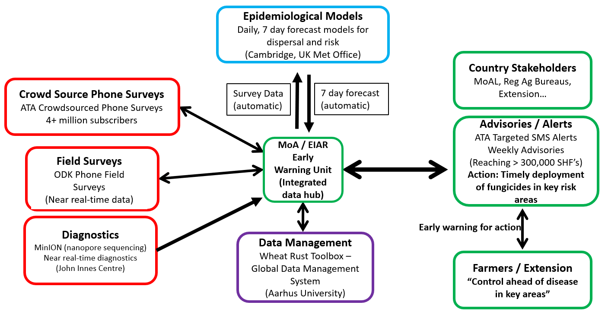

Wheat rust early warning system
Wheat rust diseases are caused by airborne fungal spores and pose a major threat to food security all over the Globe, especially in countries in East Africa and South Asia. New emerging strains of the disease present an intensifying risk of severe crop loss.
As a result of the relentless efforts of many collaborating organisations (University of Cambridge, Met Office, CIMMYT, and several others in-country), an Early Warning System has been established to provide a daily near-real time weeklong forecast of the spread of stem (Puccinia graminis), stripe (Puccinia striiformis), and leaf (Puccinia triticina) rust in East Africa and South Asia. Here is the schematic summary of the EWS components (see further details in Allen-Sader et al. 2019):

Recent publications and presentations:
Prof. Chris Gilligan’s presentation from the BGRI-2021 Workshop:
Dr. Tamas Mona’s presentation from the BGRI-2021 Workshop:
Funders:
This work is funded by The Bill and Melinda Gates Foundation and by the UK Foreign, Commonwealth & Development Office. We work closely with a number of partner research organisations.